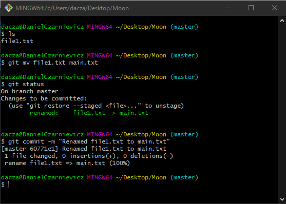

Just as with removing; renaming or moving files can be two-step operations if we don't use Git commands. Keep in mind here that for your OS, the complete name of a file includes the path to it, so moving is like renaming.
Suppose we want to change the name of file1.txt to main.txt. To do this in one command we use
git mv file1.txt main.txt
Now that our file has been renamed, we can check that it's already in the Staging Area by running
git status
See that Git already realized that what we are doing is renaming a file. Now we can commit our changes.
